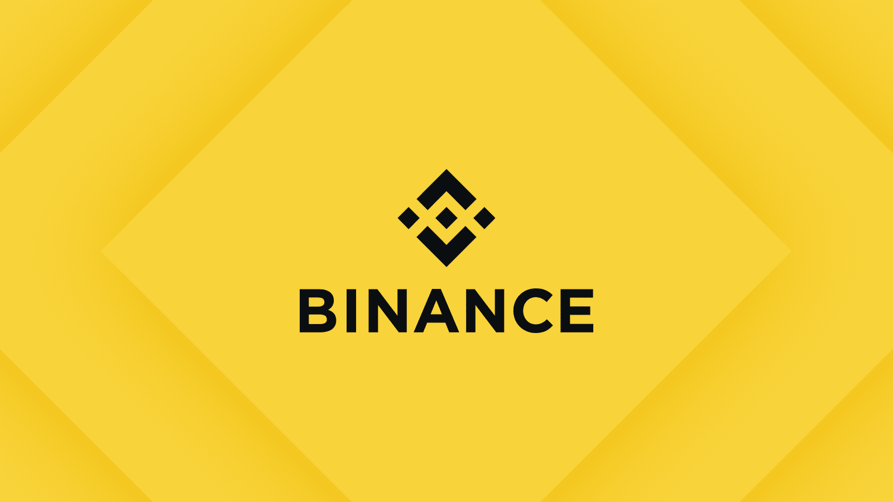

中本聰創立比特幣
2008 年 8 月 18 日，網域 bitcoin.org 註冊。
同年10月31日，中本聰撰寫的題為《比特幣:對等電子現金系統》的論文連結被發佈到密碼學郵件列表中。
論文詳細介紹使用對等網路來產生「無需依賴信任的電子交易系統」方法。
2009年1月3日，比特幣網路誕生，中本聰挖出「比特幣創世區塊」(區塊編號0)，獎勵為50個比特幣。
比特幣是什麼？
比特幣(Bitcoin)誕生於 2008 年，是世界上第一個去中心化的數位貨幣。它沒有像中央銀行這樣的管理機構，也不由任何政府發行。
簡單來說，傳統轉帳需要透過銀行記帳;而比特幣則是利用區塊鏈(Blockchain)技術，讓全球成千上萬台電腦共同維護一本「公開透明的數位帳本」。每個人都能參與記帳與對帳，因此完全無法被輕易篡改或偽造。
為什麼會漲成這樣？
比特幣從一開始一文不值，到如今暴漲成為天價資產，主要核心邏輯在於供需法則：
- 每四年產量減半： 比特幣網路設有「減半(Halving)」機制（最近一次在 2024 年），每次減半都會讓新產出的比特幣數量直接少掉一半。當市場需求不變甚至增加，但供應速度變慢，價格自然就會被推高。
- 華爾街與機構進場： 近年來，傳統金融圈發行了「比特幣現貨 ETF」，讓全世界的投資機構、退休基金都能合法合規地購買比特幣，龐大的資金湧入，徹底改變了它的身價。
- 傳奇的歷史故事： 2010 年有人用 10,000 顆比特幣換了兩片披薩，這是它第一次有了價格（一顆不到 0.01 美元）；如今它已經成為全球爭相追逐的數位資產。
這東西有什麼核心價值？
很多人覺得比特幣「看不見、摸不著」憑什麼值錢？事實上，它解決了傳統貨幣的痛點：
- 數位黃金（絕對稀缺性）： 比特幣的總量被程式碼鎖死在 2,100 萬顆，永遠不會變多。對比各國政府因為通膨不斷印鈔票，比特幣具有極強的抗通膨能力。
- 資產自主權（無法被凍結）： 只要你妥善保管好自己的「私鑰（密碼）」，世界上沒有任何一家銀行、任何一個政府可以凍結你的資產，或是阻止你把錢轉給別人。
- 24/7 無國界高速傳輸： 傳統銀行跨境轉帳可能需要 3 到 5 個工作天，還要收高額手續費。使用比特幣轉帳，不論金額多大、世界哪個角落，幾分鐘內就能送達，且全年無休。
交易所介紹
幣安 Binance

成立於 2017 年，是全球交易量最大的加密貨幣交易所，目前擁有超過 1.8 億用戶。
每日交易額高達近 900 億美元，提供超過 150 種加密貨幣交易。
- 手續費低，買賣僅收不到 0.1%，使用平台幣 BNB 還能額外折扣
- 市場深度大、流動性佳，交易滑點小
- 適合新手，介面簡潔且提供豐富教學資源
- 支援現貨、合約、理財、定期定投等多種功能
OKX 歐易

成立於 2013 年，總部位於新加坡，全球交易量前三大交易所，擁有超過 5,000 萬用戶。
- 提供超過 400 種現貨交易對，並支援合約、槓桿、期權等衍生品
- 獨家提供模擬交易功能，讓新手可以先練習再投入真實資金
- APP 介面簡潔易上手，網頁版與手機版功能同步
- 支援 Apple Pay、Google Pay、信用卡等多種入金方式
- 儲備金率超過 100%，定期公告資產透明度高
Bitunix
成立於 2021 年，新興快速成長的加密貨幣交易所，目前支援超過 1,000 個交易對，日交易量超過 50 億美元，服務全球 300 萬以上用戶，已躋身 CoinGecko 全球前五交易所。
- 流動性深度極高還有極低滑點
- 主打合約交易，提供 400+ 種 USDT 本位永續合約，最高 125 倍槓桿
- 提供跟單交易功能，新手可複製專業交易員策略
- 客服反應迅速，全天候 24 小時多語言支援
- 持有美國與加拿大 MSB 合規牌照